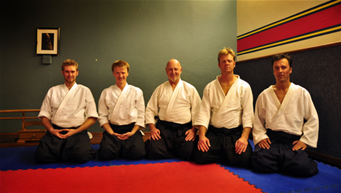
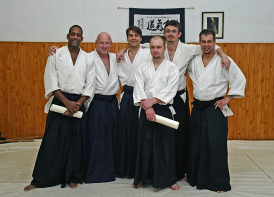
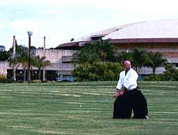

Welcome to Aikido Pretoria
AIKIDO is an authentic Japanese martial art, a modern Budo that is also a subtle system of personal development. Aikido comprises physical and spiritual dimensions and was founded by Morihei Ueshiba after he had mastered many traditional arts and engaged in profound spiritual training.
Many authoritive works have been published on the subject. Also feel free to consult our links page for more information or refer to our suggested reading list.
The Art of Aikido
Aikido is an authentic Japanese art that comprises body arts, cardio vascular exercise, co-ordinated movement, touch, strategy, self defence, philosophy, life skills, cultural issues and much more. It can therefore be misleading to try and condense/ interpret it in a short summarising paragraph. Many authoritive works have, however, been published on the subject.
Where to begin?
Aikido comprises a vast spectrum of knowledge and experience. It delves deep into the ancient weapon systems and wisdom of Japan from which it originates and find deeper meaning in the sophisticated and integrated art that derives from it. Ultimately it finds expression in the combined body arts, co-ordinated movement, touch, strategy, life skills, defence, philosophy, culture and strict exercise that is unique only to Aikido. These features and underlying concepts cannot be conveyed without experiencing them directly from an experienced master, however, without words we cannot even begin the journey toward meaningful communication and better understanding.
You have to join a dojo and start practicing!!
- AIKIDO entails rigorous exercise which include, amongst others, throws, projections and joint locks techniques. Though these can be dangerous and induce immediate submission, they are normally applied in a disciplined and graceful manner and also a caring environment so as not to cause any injury.
- AIKIDO teaches you to control and to defend yourself. One learns to face many opponents simultaneously without using force. To be able to do this require insight and strict discipline and ultimately also the systematic, detailed polishing and perfection of the executed techniques.
- AIKIDO will help you to develop a good posture and powerful, confident movement. The techniques do not require physical strength. It is practiced by people of all ages and physical make-up, by women and men alike.
- AIKIDO is non-competitive, it is not a sport! Strength is not matched with strength and force is subtly redirected by means of extension and flowing circular movements. Since the techniques require flexibility, balance and timing, there is no need to oppose the force of the attack. We blend with the attack, take control and redirect it safely and effectively.
- AIKIDO offers excellent exercise. It is a proven way of restoring and preserving a supple and healthy body. It is a good way of expending energy, to stimulate the heart and to tone the body. It helps one to acquire agile movement and speed of reaction. This is useful in every day life.
- AIKIDO is practiced with a partner. By applying the techniques you learn from others and they in turn can learn from you. Practice is practical, applied, energetic and FUN!
- AIKIDO literally means "The Way of Harmony" It is essentially non-competitive and non-violent. It is integrated with traditional Budo and addresses moral values. It also offers a practical and balanced lifestyle.
- AIKIDO is promoted as a subtle and graceful martial art, effective and best suited for gentle people.
Instructors
The current instructors at the new TuksAikido Dojo in Hatfield, Pretoria c2013.

From left to right: F Flawn, R Middleberg, Paul de Beer, R Klopper, P Wessels
The senior students in the old Hatfield dojo c2003.

From left to right: Rensoli Orestes, Paul de Beer, Loray Daws, Adriaan Swart, Sam Olivier, Johan Greyling
These men have all taken up leadership positions and are spread across the world. Some have gone on to become respected Aikido instructors in their own right.
THE DOJO:
The Pretoria Aikikai was established in 1979. It incorporates TuksAikido and functions as a close integrated unit with other dojos in the region. It continues to play a central role in training instructors and spreading Aikido throughout South Africa.
TuksAikido is situated in Hatfield and serves as the central dojo in Pretoria. It is run by Mr Paul de Beer (6th Dan, Aikikai, Dojo-cho) with the aid of assistant instructors. It has close ties with Aikido groups in Japan, Italy, Guam, Great Britain, Hong Kong, New Zealand, Australia, Canada, China, Russia and Reunion. Seminars and exchanges take place at regular intervals.
Training is done in an energetic, friendly, safe and non-competitive atmosphere. Beginners and advanced students train as a close, integrated community and family unit in the same class. The pace varies according to the experience and seniority of each member.
CLUB VENUE AND PRACTICE TIMES
 Venue:
TuksAikido share facilities with Taekwondo. The dojo is situated in a basement on the western side of the Rembrandt hall in the LC De Villiers Sport Centre of the University of Pretoria, South Street extension (East), Hatfield, Pretoria.
GPS Co‑ordinates:
S25° 45.198
E28° 14.965
Training times (As of the 2'nd of February 2013):
Mondays:
18:00 to 19:30
Wednesdays:
18:00 to 19:30
Fridays:
18:00 to 19:30
The dojo is closed on public, as well as certain University/School holidays. Please be ready and seated on the mat before the starting time or report to the instructor if you happen to be late. Beginners and visitors are always welcome.